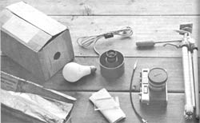
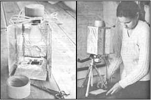
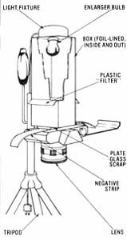

You can expand your photographic horizons - to increase the pleasure you can get from your hobby or the profit you can earn from you home business - by building...
Not long ago, a friend (and fellow photo hobbyist) told me, with no little pride, that he'd designed and built a low-cost homemade enlarger. I congratulated him on his ingenuity but - I confess - assumed that the device was likely an interesting plaything rather than a practical piece of photographic equipment. Therefore, when it came time for me to have an enlarger, I promptly made the rounds of my area's photo supply stores to see what such establishments had to offer.
It soon became clear that I'd have to do one heck of an enlarging job on my budget before I'd be able to purchase one of the expensive pieces of equipment. I was, as the saying goes, between a rock and a hard place. So (extremely grateful that I'd kept my doubts about his creation to myself) I called my picture-taking buddy and asked him to tell me how he'd built his enlarger.
Well, to make a long story short, I wound up assembling five of the devices before I felt I'd really developed the design to its full potential. The fifth enlarger, though, worked like a charm . . . and as an added bonus, I believe I learned enough in the course of putting my rejects together to tell you how to produce a "perfect" blow-up-maker on your first attempt!
Before you begin work on your homemade enlarger, gather the components shown in the accompanying photo: your 35mm camera and a tripod (most such cameras come equipped with a 50mm lens, which will allow you to make 8" X 10" and larger prints .. . a "macro", or close-up, lens will give you the capability of making smaller prints, as well), a box of aluminum foil, a scrap of plate glass, a cable release, a corrugated cardboard box of about 4-1/2" X 4-1/2" X 10", a roll of gray duct tape, an enlarging bulb (you can buy one at almost any photo shop), and a translucent plastic milk carton (a piece of which will be built into the enlarger as a filter, to prevent "hot spots" from marring your photos).
Now, mount your camera on the tripod. with the lens facing down, open the imagemaker's back, and set one small end of the box on the opening. (This will enable, you to see how well the box will "mesh" with the tripod/camera assembly and to make modifications if necessary. For example, I had to trim the carton a bit to accommodate some inconvenient protrusions on my tripod!) When the components have been "custom fit" to one another, remove the box and - on the end that will rest upon the camera - cut out a centered 1-1/2" X 2" rectangle. (The light will pass through the hole and through the negative, projecting - by way of the camera's lens - the enlarged image on your photo paper.) On the opposite side of the container, trace and cut out a hole large enough for the socket of your light fixture (roughly 1-1/2" in diameter).
Once the openings are made, you can line the interior of the box with aluminum foil (dull side out), taping the reflective material securely in place. Then put the light fixture in position and screw the enlarging bulb into the socket from the inside of the box.
Before sealing the container for good (it won't be opened till the light burns out!), cut a 4-1/2" X 6" rectangle from the plastic milk carton and - by making slits in opposite sides of the box, slipping the plastic through them, and holding it taut with tape - install the homemade filter about halfway between the lowermost part of the light bulb and the bottom of the box. With that done, you have only to seal the container and cover its outside with tapedon foil (shiny side out ) ... before your homemade enlarger will be ready to go to work!
In order to use your new piece of equipment, you'll have to make sure that the shutter of your camera stays open . (On many 35mm cameras, the shutter can't be held open without using a cable release that can be locked - or taped down - to fasten the shutter in its light-admitting position.)
With the camera mounted on its tripod, set your negative strip on the open back and cover it with the scrap of plate glass. Then put the enlarger in place, being sure that it sits upright on the camera. I usually begin (after, of course, assembling my standard dark room equipment . . . including trays, chemicals, a "safe" light, and print paper) by cutting a sheet of paper into test strips . . . and then setting the camera's f-stop at f-8 and exposing the "trial" bits of paper for ever longer periods of time, increasing the amount of light by about four seconds with each strip.
Once I've determined the optimum exposure time, I place a full sheet of paper in position and turn on the light for just the proper period to give me the best enlargement possible (of course, the "perfect" exposure time will vary from one negative, and one type of paper, to another). My enlarger has a switch built into the light cord, which allows me to turn the bulb on and off when I please ... although you could, of course, simply unplug the cord to accomplish the same thing, provided you're careful not to move or bump the enlarger in the process.
It's sometimes possible to improve the quality of the print by varying your camera's f-stop: By adjusting the device to a lower f-setting, you'll admit more light and thus effectively reduce the time of exposure that's necessary. (The latter option can be quite valuable, as some papers do not respond well to long exposure times. On the other hand, though, most cameras operate at their best at a given f-stop . . . and - since this "prime setting" is commonly around f-8 - that's how I routinely set my camera.)
That's really all there is to it. If you're new to the photo game, you might want to invest in a few lessons in basic photographic techniques, but - once you've had sufficient practice with your new enlarger - you can be sure that it will really do the job.
And just how good a job will it do? Well, let's just say that this former skeptic used her homemade device to enlarge the pictures that accompany this article. Not too bad, huh?
|
 Materials and equipment for an enlarger include aluminum foil, plate glass, a cable release, a 35mm camera, a tripod, a cardboard box, a light bulb, and a light fixture with cord. |
 LEFT: The ""innards"" of the enlarger box before it is sealed. The square hole at the bottom of the carton allows the light to pass out of the box and through the glass, negative, and lens. . . and then project the image. RIGHT: The author directly under the lens, at the point where the negative's image will appear. The camera ? with the enlarger set on top ? is attached to a tripod and placed face down. Note the cable release attached to the camera's top. |
 |